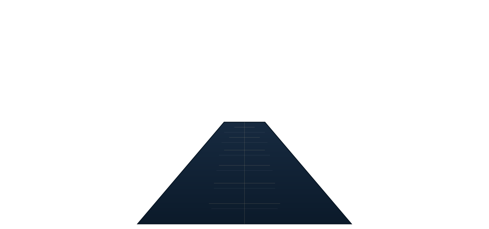
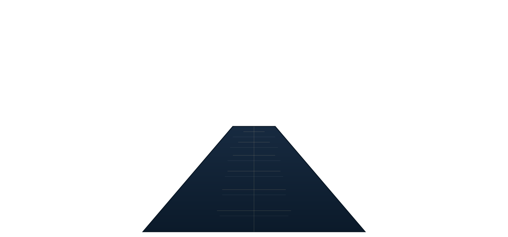

LLM Automation & Security Analysis
Problem Signals were many, hours were few.
Approach Prompts and parsers triaged findings with confidence thresholds and human sign‑off.
Impact Focused analyst time and clear dashboards.

|
In the quiet between signals and steel, a lantern’s glow reveals patterns in the dark. These are the chronicles of a defender—where lore meets logic.
Systems, networks, automation, and security practices across labs and projects.
PowerApps/Flows, scripts, and dashboards to streamline operations and reduce toil.
Endpoint deployment (ESET), Microsoft 365 administration, and audit support.
I am currently pursuing cybersecurity studies at 2600: The Hacker School, specializing in penetration testing, system administration, and security automation. My expertise spans endpoint management, scripting, network security, and data analysis—combining technical precision with creative problem-solving.
Problem Signals were many, hours were few.
Approach Prompts and parsers triaged findings with confidence thresholds and human sign‑off.
Impact Focused analyst time and clear dashboards.
Problem Tickets wandered; approvals lagged.
Approach Low‑code routing with alerts for SLA breach and auditable steps.
Impact Fewer delays; clearer ownership.
Problem Endpoints adrift without common law.
Approach Policy baselines, update windows, and incident playbooks.
Impact Quicker rollouts; steadier ground.